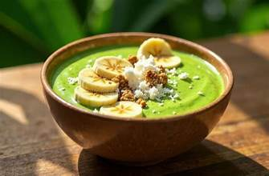

Green Smoothie Bowl
A vibrant blend of spinach, banana, and almond milk topped with fresh berries and granola. This nutrient-packed bowl is perfect for starting your day with sustained energy.
Ingredients
- 1 cup fresh spinach
- 1 ripe banana, sliced
- ½ cup almond milk (unsalted)
- ½ cup Greek yogurt (no salt added)
- ½ cup mixed fresh berries
- 2 tbsp unsalted almonds, sliced
- 1 tbsp raw honey
- ½ cup gluten-free granola
Instructions
- Blend spinach, banana, almond milk, and Greek yogurt until smooth and creamy.
- Pour the smoothie mixture into a bowl.
- Top with fresh berries, almonds, honey, and gluten-free granola.
- Serve immediately and enjoy with a spoon.
Notes
For extra protein, add 1 tbsp of unsalted almond butter. You can also substitute the Greek yogurt with coconut yogurt for a dairy-free option.